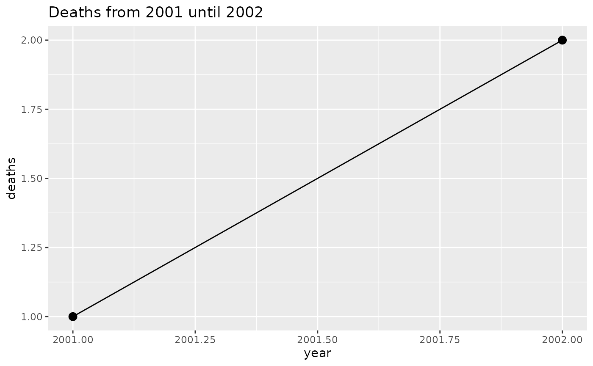
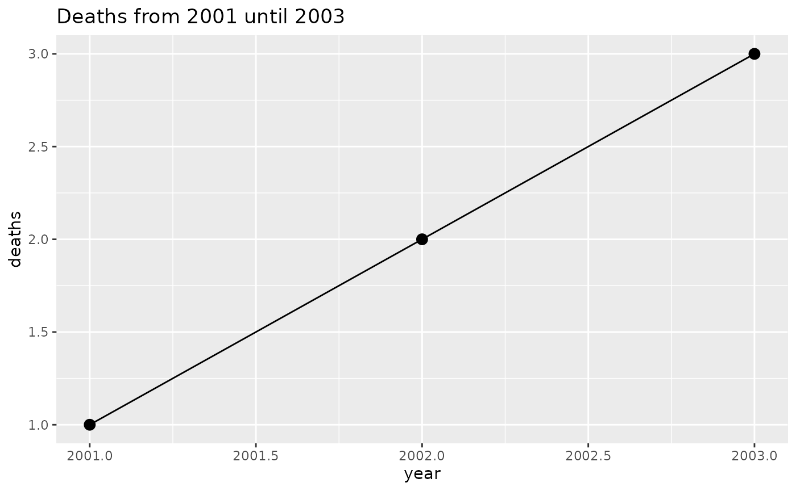
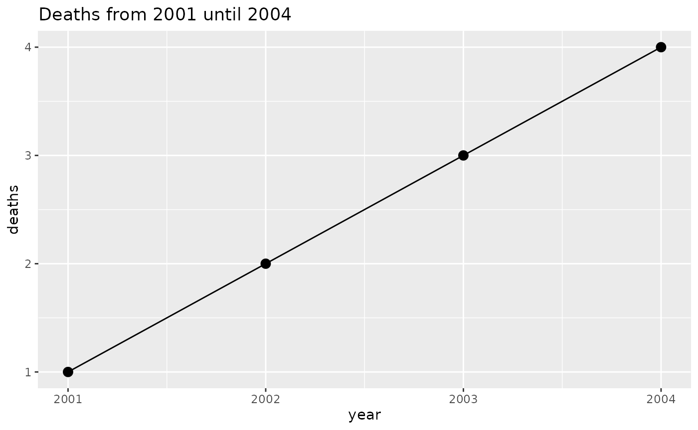

Philosophy
| Object | Description |
|---|---|
| argset | A named list containing set of arguments |
| analysis |
These are the fundamental units that are scheduled in plnr: * 1 argset * 1 function that takes two arguments: 1. data (named list) 2. argset (named list) |
| plan |
This is the overarching “scheduler”: * 1 data pull * 1 list of analyses |
In brief, we work within the mental model where we have one (or more) datasets and we want to run multiple analyses on these datasets. These multiple analyses can take the form of:
- one function (e.g.
table_1) called multiple times with different argsets (e.g.year=2019,year=2020) - multiple functions (e.g.
table_1,table_2) called multiple times with different argsets (e.g.table_1:year=2019, while fortable_2:year=2019andyear=2020)
By demanding that all analyses use the same data sources we can:
- Be efficient with requiring the minimal amount of data-pulling (this only happens once at the start)
- Better enforce the concept that data-cleaning and analysis should be completely separate
By demanding that all analysis functions only use two arguments (data and argset) we can:
- Reduce mental fatigue by working within the same mental model for each analysis
- Make it easier for analyses to be exchanged with each other and iterated on
- Easily schedule the running of each analysis
By including all of this in one Plan class, we can easily maintain a good overview of all the analyses (i.e. outputs) that need to be run.
Example
We now provide a simple example that shows how a person can develop code to provide graphs for multiple years.
library(ggplot2)
library(data.table)
# We begin by defining a new plan
p <- plnr::Plan$new()
# We add sources of data
# We can add data directly
p$add_data(
name = "deaths",
direct = data.table(deaths=1:4, year=2001:2004)
)
# We can add data functions that return data
p$add_data(
name = "ok",
fn = function() {
3
}
)
# We can then add a simple analysis that returns a figure:
# To do this, we first need to create an analysis function
# (takes two arguments -- data and argset)
fn_fig_1 <- function(data, argset){
plot_data <- data$deaths[year<= argset$year_max]
q <- ggplot(plot_data, aes(x=year, y=deaths))
q <- q + geom_line()
q <- q + geom_point(size=3)
q <- q + labs(title = glue::glue("Deaths from 2001 until {argset$year_max}"))
q
}
# We can then add the analysis (function + argset) to the plan
p$add_analysis(
name = "fig_1_2002",
fn_name = "fn_fig_1",
year_max = 2002
)
# And another analysis
p$add_analysis(
name = "fig_1_2003",
fn_name = "fn_fig_1",
year_max = 2003
)
# And another analysis
# (don't need to provide a name if you refer to it via index)
p$add_analysis(
fn_name = "fn_fig_1",
year_max = 2004
)
# How many analyses have we created?
p$len()## [1] 3
# When debugging and developing code, we have a number of
# convenience functions that let us directly access the
# data and argsets.
# We can directly access the data:
p$get_data()## $deaths
## deaths year
## 1: 1 2001
## 2: 2 2002
## 3: 3 2003
## 4: 4 2004
##
## $ok
## [1] 3
# We can access the argset by index (i.e. first argset):
p$get_argset(1)## $year_max
## [1] 2002
# We can also access the argset by name:
p$get_argset("fig_1_2002")## $year_max
## [1] 2002
# We can acess the analysis (function + argset) by both index and name:
p$get_analysis(1)## $fn
## NULL
##
## $fn_name
## [1] "fn_fig_1"
##
## $argset
## $argset$year_max
## [1] 2002
##
## $argset$index_analysis
## [1] 1
# We recommend writing commented-out code for the first two
# lines of the analysis function that directly extracts
# the needed data and argset for one of your analyses.
# This allows for simple debugging and code development
# (the programmer would manually run the first two lines
# of code and then run line-by-line inside the function)
fn_analysis <- function(data, argset){
# data <- p$get_data()
# argset <- p$get_argset("fig_1_2002)
# function continues here
}
# We can run the analysis for each argset (by index and name):
p$run_one("fig_1_2002")
p$run_one("fig_1_2003")
p$run_one(3)
fn_name or fn?
In the functions add_analysis, add_analysis_from_df, apply_analysis_fn_to_all, and add_data there is the option to use either fn_name or fn to add the function.
We use them as follows:
library(ggplot2)
library(data.table)
# We begin by defining a new plan and adding data
p <- plnr::Plan$new()
p$add_data(direct = data.table(deaths=1:4, year=2001:2004), name = "deaths")
# We can then add the analysis with `fn_name`
p$add_analysis(
name = "fig_1_2002",
fn_name = "fn_fig_1",
year_max = 2002
)
# Or we can add the analysis with `fn_name`
p$add_analysis(
name = "fig_1_2003",
fn = fn_fig_1,
year_max = 2003
)
p$run_one("fig_1_2002")
p$run_one("fig_1_2003")
The difference is that with fn_name we provide the name of the function (e.g. fn_name = "fn_fig_1") while with fn we provide the actual function (e.g. fn = fn_fig_1).
It is recommended to use fn_name because fn_name calls the function via do.call which means that RStudio debugging will work properly. The only reason you would use fn is when you are using function factories.